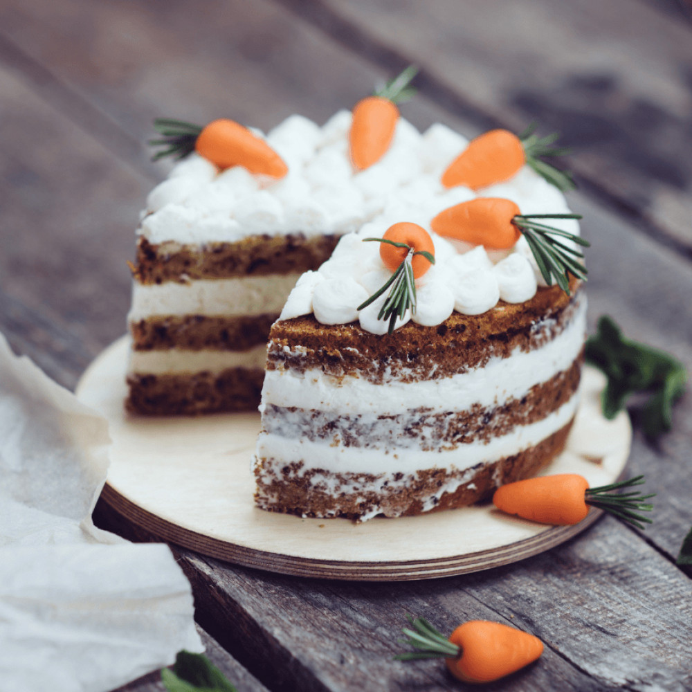
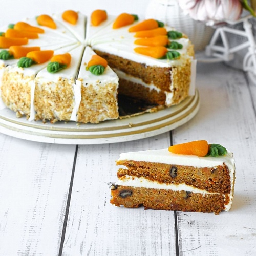
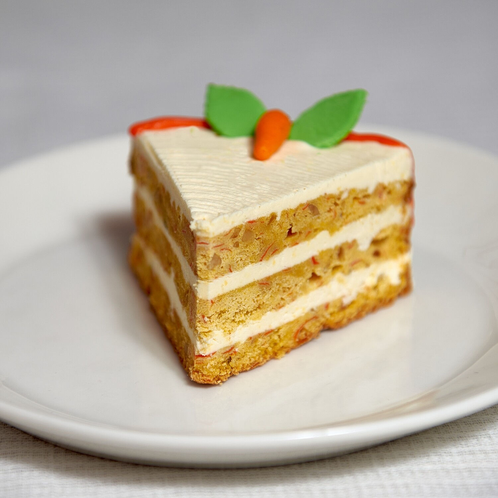
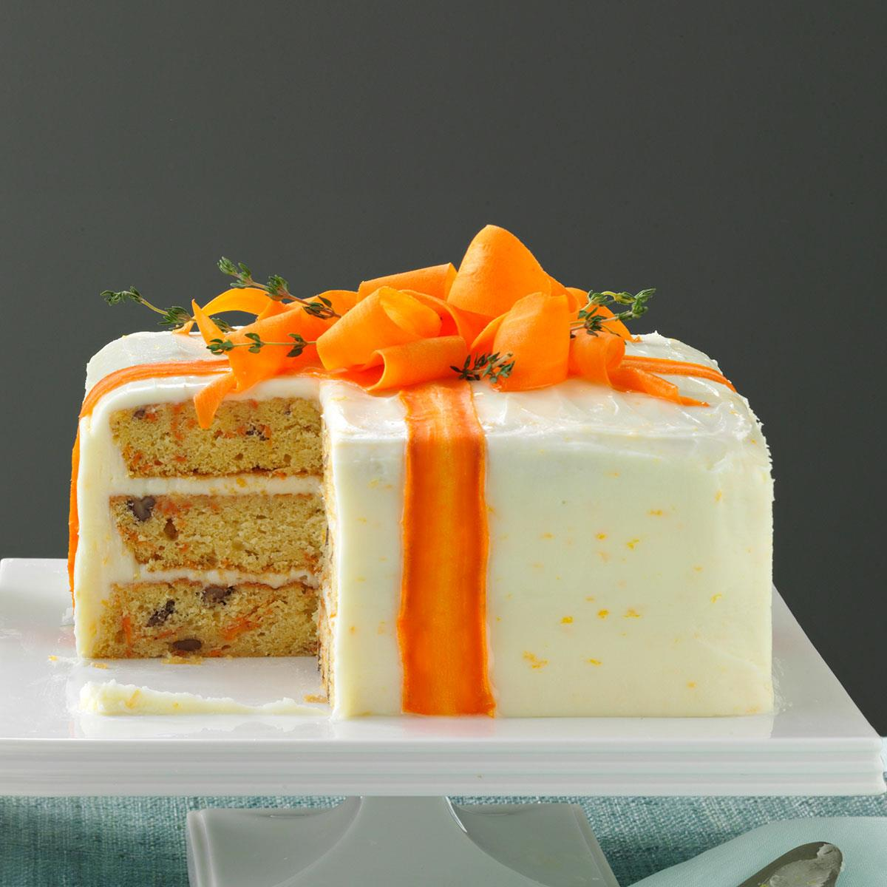

 
Яйца взбить до белой пены. Это примерно 5-7 минут. К яцам добавить масло и отжатую от сока натертую морковь вместе с цедрой. Все аккуратно перемешать. Муку,соду, разрыхлитель, соль, мускатных орех и корицу смешать. Грецкий орех порубить и добавить к сухим ингредиентам. Аккуратно вмешать все сухие ингредиенты. Выложить тесто в кольцо или форму. Выпекать в духовке, разагретов до 160-180 градусов около 50 минут, но проверять готовность деревянной шпажкой.
Замочить желатин в холодной воде. Растопить сахар до янтарного цвета. Аккуратно добавить в растопленный сахар теплые сливки, не забывая постоянно помешивать. Добавить набухший желатин, соль, корицу, мускатных орех, ванильный экстракт и цедру. Остудить все до 40 градусов. Ввести холодное сливочное масло, нарезанное кубиками и пробить все блендером. Охладить в холодильнике до стабилизации.
Сливочное масло комнатной температуры взбить до бела и пышности. Добавить сыр, пудру и ванильный экстракт. Пробить все до однородности.
Бисквит после выпечки завернуть в пищевую пленку и оставить на ночь. Разрезать на 4 коржа. Крем и карамель отсадить по спирали, повторить с каждым слоем. Дать торту пропиться ночь.
 